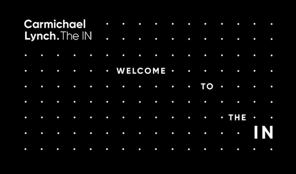
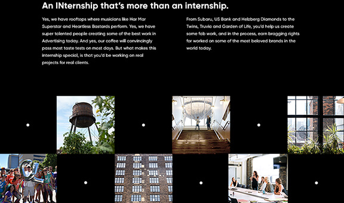

Carmichael Lynch Internship
Developed Site for Summer Session
Every year, I am responsible for developing the internship application website. Each department has a form that submits applicant information to a database and implements automatic trigger events that sends confirmation and submission emails to department heads or candidates. Furthermore, I collaborate with designers to build their vision and test website functionality with the technical lead and quality assurance specialist.
Click here to view, The Internship
Software: Photoshop, HTML, JavaScript, jQuery, PHP